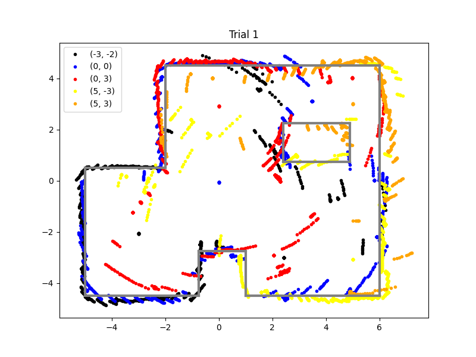

The goal of this lab is to map out a static room using the sensors on the robot. We place the robot in 5 marked locations and have it rotate on its axis to gather ToF readings. These readings will be used to generate the map.
I chose to control the robot's rotation using orientation control. From lab 6, I
created a PID controller to control the orientation. I use the same PID controller for this lab since I
incorporate a command to change the set angle on the fly. This is more robust than open loop control and is
simple as the PID controller is already created.
I placed tape on the tires of the robot to limit the friction and get the wheels turning more uniformly.
This required me recalibrating the conversion factor between the left and right motors. The new conversion
factor is: right_speed = 0.9 * left_speed. Below is the code for the PID controller. It is pretty much
identical to lab 6, but the error tolerances are only 1 degree.
if (recording){
updateGyro();
ToFSensorGetData(distanceSensor1, distance_1);
PIDcontrol();
// if err positive, turn right, if negative turn left
if (err > 1){
speed = min_speed + PID;
if (speed > 255){
speed = 255;
}
if (speed < min_speed){
speed = min_speed;
}
right_speed = 0.9 * speed;
turn_right();
}
else if (err < -1){
speed = min_speed - PID;
if (speed > 255){
speed = 255;
}
if (speed < min_speed){
speed = min_speed;
}
right_speed = 0.9 * speed;
turn_left();
}
else{
stop_car();
}
if (recording == false){
stop_car();
}
store_data();
counter++;
if (counter == SIZE){
recording = false;
stop_car();
SERIAL_PORT.print("Done Recording");
}
}
For the gains, I used the same ones from lab 6 as they seemed to perform well and limit oscillations. The values are: Kp = 0.4, Ki = 0.1, Kd = 0.2. I had the robot turn in 20 degree increments and completing a complete 360 degree turn to come back to where it started. This yielded 19 turns. Given our leniency, this means the robot could be off by 19 degrees. This assumes that there is a drift of 1 degree after each turn.
# Create a loop to cycle through the set points while taking ToF readings
# loop speed will be dependent on the size of the arrays/total sampling time
import time
# start at 0
ble.send_command(CMD.SET_POINT, "0")
ble.send_command(CMD.START_PID, "")
# increments of 20 degrees, 19 readings to account for possible drift/not
# turning enough due to our 1 degrees of leniency each turn
for i in range(0, 19):
angle = i * 20
ble.send_command(CMD.SET_POINT, str(angle))
time.sleep(0.6)
time.sleep(1)
ble.send_command(CMD.STOP_CAR, "")
To test the drift more accurately, we had the robot read out the gryo Z readings for ~15 seconds to calculate the average drift per second. We did this 3 times and got an average drift of ~0.11 degrees/second. Our control loop runs for 12.4 seconds. Lets round up to 20 seconds to account for connecting to the robot and initialzing the code. This yields a drift of ~2.2 degrees in total. From this, since the error only allows +/- 1 degree, our robot should be off by at most ~3.2 or 4 degrees at the end.
First, I made sure that the robot could spin on its axis. The parametes (such as min speed) were tuned to the lab floor, so it spun in place better in the lab.
After that, I gathered data at the 5 different locations. Below is a graph of 1 of the locations. We first plot the ToF readings raw, then convert to polar coordinates to better visualize the layout. The conversion was straightforward as we directly measured angle and distance, we just needed to convert from degrees to radians. We show 2 trials in the polar map and they are relatively aligned.
Before we can plot the data into a map, we have to convert from the ToF frame of reference to the inertial frame of reference. We also have to convert from mm to feet. We also have to account for the offset from the gyroscope to the ToF sensor. The ToF sensor is 11.6cm away (or 0.38 feet) from the sensor in the y direction. The formulas and code to convert and plot the data is below:
# assume dist = mm, angle = degrees, x_off = ft, y_off = ft
def combine_plot(dist, angle, x_off, y_off, color, label):
x = []
y = []
dist_ft = np.reshape(np.asarray(dist) * 0.00328084, (len(dist), ))
angle_rad = np.reshape(np.deg2rad(angle), (len(angle), ))
for i in range(len(dist)):
x.append((dist_ft[i] * np.cos(angle_rad[i])) + x_off)
y.append(((dist_ft[i] + 0.38) * np.sin(angle_rad[i])) + y_off)
plt.plot(x, y, '.', color=color, label = label)
When gathering the data, I did not standardize the initial orientation of the car, so I had to manually offset the angles of the readings to line up the map. In the future, a standardized orientation will be implemented. Below are the maps of two trials:
After outlining the maps, we found the coordinates of the line segments (in the (x_start, y_start) and (x_end, y_end) format) to be:
start = [(-0.75, -4.5), (-5, -4.5), (-5, 0.5), (-2, 0.5), (-2, 4.5), (6, 4.5), (6, -4.5), (1, -4.5), (1, -2.75), (-0.75, -2.75), (2.4, 0.75), (2.4, 2.25), (4.9, 2.25), (4.9, 0.75)]
end = [(-5, -4.5), (-5, 0.5), (-2, 0.5), (-2, 4.5), (6, 4.5), (6, -4.5), (1, -4.5), (1, -2.75), (-0.75, -2.75), (-0.75, -4.5), (2.4, 2.25), (4.9, 2.25), (4.9, 0.75), (2.4, 0.75)]
Below are the line segments superimposed on both trials of mapping. We see that the estimation is very accurate
